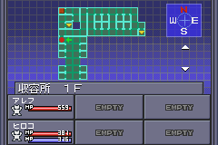
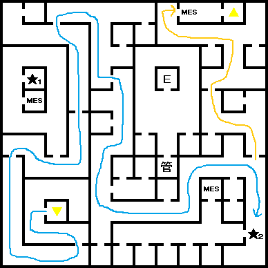
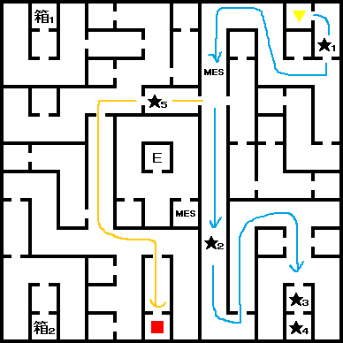

- 홀리 타운
- 수용소
- 감시탑
- 감시탑(내부)
- 대교회
- 마계
- 티페레트
- 알카디아
- 팩토리 해방
- 센터 20F
- 센터 21F
- 센터 22F
- 원로원과 전투
- 다시 마계로...
홀리 타운
홀리 타운 밖에서 약간 밑으로 내려 가면 자인이 팩토리 해방에 협력을 바라고 있다. 이제 팩토리로 가자.
수용소
예전에 旧스이도우바시에서 갔던 수용소(B1F)와 같은 구역이지만, 층이 다르다.(이번에는 1F) 아래는 수용소로 가는 방법이다.
- 팩토리의 목장 아래쪽에 있는 발굴현장으로 간다.
- 발굴현장 B2F에서 밖으로 나온다.
- 동쪽의 절벽에 입구로 들어간다.
수용소 1F 입구로 가면 자인이 기다리고 있다. 수용소 안으로 들어가서 갇혀 있는 사람과 모두 대화를 하자.(총 6명)
더 내부로 들어가려고 하면 자인이 말을 걸어온다. 잘못하면 지나칠 수 있기 때문에 아래에 자세히 설명한다.

위 그림의 빨간색 마커의 위치에서 서쪽을 바라보고 있으면 수용소의 상황을 이상히 여기는 자인을 볼 수 있다. (다른 방향을 보면 자인이 나오지 않는다.)
이후 팩토리의 감시탑으로 향한다.
감시탑
팩토리 지역 중앙에 있는 감시탑 안으로 들어가자. 진입하기 위해서는 주인공의 지혜가 10이상이 필요하다.(이 내용에 대한 힌트는 홀리 타운의 바에서 볼 수 있다.)
감시탑(내부)
1F~12F는 복잡한 길은 아니라서 함정만 조심하면 된다.
13F에 있는
BOSS:마왕 벨페고르와 전투. 화염을 반사하며 총, 긴박, 전격에 강하다. 주로 상태 이상을 유발하는 마력계 기술을 사용한다.
쓰러뜨리고 북쪽 철장안에 있는 세이렌을 만난 후 대교회로 향한다.
대교회
일단 홀리 타운의 바(BAR)에서 왼쪽에서 4번째 남자와 대화하면 세이렌에 대한 정보를 얻을 수 있다.
대교회 2F 남동쪽 골방의 남자로부터 「잠자는 인형(眠る人形)」을 입수.
3F의 계단 근처의 방에 들어가면 전에 하나다를 만났을 때와 비슷한 방의 모습이다.
인형을 배치해야 되는데 「
Y,Y,Y,N,Y」순서로 선택해서 인형을 세워놓자.(마지막 인형만 바꾸면 된다.)
이상한 공간이 열리고 여길 통해서 마계로 갈수 있게 된다.
마계
마계에 오자마자 남쪽으로 내려가면 페텔센(ペテルセン)을 만날 수 있다.
페텔센은 자신의 연인인 세이렌에게 데려가 달라는데 거절을 하면
CHAOS속성이 증가한다. 여러 번 거절할 수 있다. (언제든지 YES를 선택하면 스토리 진행할 수 있다.)
마계 입구 기준으로 남동쪽에 있는 십자 모양의 지역으로 들어가면 알카디아로 워프하게 된다.
티페레트
일단은 좀 더 둘러보고 가기로 하자. 북서쪽에는 티페레트가 있다.
바(BAR)에서 루이 사이퍼를 만날 수 있다.
좋은 장비도 팔고 있지만 여기서 중요한 곳은 바로 카지노이다. 여기 카지노의 B&S 마지막 상품은 블래스터건(ブラスターガン)으로 국우의 총(国友の銃) 바로 아래의 공격력을 가지고 있다. 사실상 국우의 총은 공격 횟수(0~1) 때문에 사용하기가 어려운 점이 있다. 대신 이 블래스터건은 공격 횟수가 2~3이나 되기 때문에 200이라는 공격력으로 매우 강력한 무기가 된다.
알카디아
각 층마다 운의 향이 있다.(5개) 5F에 올라가서
BOSS:전사 기멜을 만나 전투.
쓰러뜨린 후 선택지가 뜬다.
| 이름을 입력한다 |
LAW |
| 부셔버린다 |
CHAOS |
| 밖으로 나온다 |
변동 없음 |
1F의 출구로 나와 우측 건물로 들어가면 알카디아~센터 통로로 나오게 된다.
팩토리 해방
다시 세이렌을 만나러 감시탑으로 가면 세이렌과 페텔센 재회하고 팩토리 지역이 해방된다.
- 해방 이후 팩토리 발굴현장 B3F의 베텔기우스가 있던 장소에 가보면 「목성의 필라(木星のピラー)」를 입수할 수 있다.
- 수용소 1F에 잡혀 있던 사람들을 한 명씩 풀어줄 때마다 LAW속성이 증가한다.
- 旧아카사카의 가이아 신전 근처(서쪽)에서 팩토리 노동자를 만나면 센터의 패스코드를 받게 된다. 패스코드는 [0920]
가두TV를 시청하면 센터의 교주가 나와서 자인의 출두를 요청하고 있다. 홀리 타운의 공기 공급을 차단하겠다는 협박까지 더 하면서...
홀리 타운 근처에서 자인을 만나고 센터로 이동하자.
센터 20F
21F에서 교주에게 22F의 패스코드를 받게 된다. 패스코드는 [2784]
20F으로 내려와서 남서쪽의 계단으로 올라가자. 입구의 패스코드는 [5261]이다. (바에 있는 템플 나이트가 알려주는 패스코드이다)
센터 21F

- ★1 : 바이오 연구소
- ★2 : 패스코드 입력[0920]
21F 남동쪽에서 팩토리 노동자가 알려준 패스코드[0920]을 사용해 안으로 들어가면 과거를 회상하게 된다.
북동쪽 계단을 통해 22F에 가자.
센터 22F

- ★1 : 패스코드 입력[2794]
- ★2 : 수수께끼의 석판
- ★3 : 자인
- ★4 : 원로원
- ★5 : 패스코드 입력[3470] - 에덴
- 箱1 : 엔젤헤어(エンゼルヘアー)
- 箱2 : 안개의 항아리(霞の壺)
- ■(적색) : 에덴 출입구
22F에서 주교에게 받은 패스코드[2784]를 입력하고 들어간다.
얼마 안 가 복도에서 파란 로브를 입은 원로를 만난다. 원로원은 잘못되었고 그것은 신의 마음을 거역하고 있다고 말한다. 과연...
아래로 내려가면 말하는 벽과 만나게 된다. 여기서
가장 큰 영향을 끼치는 속성 변화가 되는 질문을 한다.(루트 확정은 아니다.)
| No. |
질문 내용 (요약) |
변동사항 |
다음 질문 번호 |
| 1 |
모친을 죽일까요? |
YES → CHAOS
NO → LAW |
2
3 |
| 2 |
마카를 사람들을 위해 내놓을까요? |
YES → LAW
NO → CHAOS |
4
6 |
| 3 |
소녀를 도울까요? |
YES → LAW
NO → CHAOS |
6
5 |
| 4 |
적을 죽일까요? |
YES → CHAOS
NO → LAW |
|
| 5 |
죽은 동료를 두고 갈까요? |
YES → CHAOS
NO → LAW |
|
| 6 |
먼저 싸움을 걸까요? |
YES → CHAOS
NO → LAW |
|
변동된 속성의 결과에 따라 벽이 말하는 마지막 대사가 다르다. 모두 5가지로 마지막 대사는 다음과 같다.
| 속성 |
마지막 대사(마지막 줄) |
| 극LAW |
汝の魂は 神にたたえられよう |
| LAW |
救世主として たたえられよう |
| NEUTRAL |
報われること はなはだ少なし |
| CHAOS |
その手は血ぬられ 呪われるであろう |
| 극CHAOS |
決して 近づけぬであろう |
원하는 속성으로 대답해주고 앞으로 진행하자.
안에는 석상이 되버린 자인이 있다. 그 안으로 더 들어가면 노랑, 초록, 빨강색 로브를 입은 원로원들이 있다. 원로원의 정체는 대천사들이며 주인공을 못난 구세주라며 죽으라고 한다.
원로원과 전투
BOSS:대천사 우리엘 & 대천사 라파엘
라파엘(좌측)의 상성 : 신경/파마/주살/마력을 반사, 전격/충격을 반사
우리엘(우측)의 상성 : 신경/파마/주살/마력을 반사, 검/만능 이외의 물리 공격 반사
우리엘보다 라파엘이 체력이 약간 적다.
마하잔마, 마하브후라 같은 공격을 해오니 방어 상성에 대비하자.
BOSS:대천사 미카엘
미카엘의 상성 : 화염 반사, 총/전격/긴박에 강함
화염계 공격 마법과 메기드라온 등등 강력한 마법을 사용한다. 체력도 우리엘보다 약 1000정도 높은 2856의 HP를 가지고 있다. 가끔 회복 마법을 사용하기도 한다.
미카엘을 쓰러뜨리면 죽은 중마까지 모두 부활&회복 시켜주고, YHVH와 전투를 하게 된다.
BOSS:신령 YHVH(가짜)
YHVH(가짜)의 상성 : 파마/주살/마력/긴박을 반사, 돌격/기술에 강함
HP 3987. 미카엘보다 흉악한 각 속성별 최강 마법을 가지고 있다. 전부다 전체 공격이니 HP관리에 신경 써야 된다.
전용 특기로 「갓보이스(ゴッドボイス)」를 사용하는데 파티내에 가장 지혜가 낮은 순서부터 BIND상태로 만든다.
다시 마계로...
원로원을 모두 쓰러뜨린 후 파란 로브의 원로가 정체를 밝힌다. 정체는 바로 천사 가브리엘. 구세주를 기다릴 수 없던 대천사들은 스스로 구세주를 만들어내고 했다...라는 이야기를 한다.
자인의 석화가 풀려나고 홀리 타운에 이상 현상이 발생한다. 조사를 부탁하는 자인.
이 시점에서 버추얼 배틀에 들어가면 STEVEN과 만난다. 마지막으로 COMP를 강화시켜준다.(중마 스톡 수를 늘려준다.)
이제 본격적으로 마계로 갈 준비를 해야 된다. 마계로 가기 위한 재료는 바로 7개의 필라. 아직 못 얻은 필라를 입수하도록 하자.
| 필라 |
입수 방법 |
| 태양의 필라 |
마사카도를 부활시키고 봉인의 동굴에 가면 입수 |
| 달의 필라 |
만월시 홀리 타운 디스코에서 우승한다(주인공의 마력이 10 이상 필요) |
| 화성의 필라 |
다레스를 쓰러뜨리면 입수 |
| 수성의 필라 |
홀리 타운 부흥 후, 정크숍에서 서비스로 준다. |
| 목성의 필라 |
팩토리 해방 후, 발굴현장 B3F의 베텔기우스가 있던 자리에 있다. |
| 금성의 필라 |
대교회 근처에서 모로크의 꼬리 확인 후, 旧록본기의 장로가 준다. |
| 토성의 필라 |
旧아카사카 동쪽의 드워프의 일을 도와주면 입수 |
금성의 필라는 대교회 근처에 악마의 꼬리가 올라오는 이벤트를 보고 旧록본기 B2F의 무기점 위에 있는 방에 있는 장로에게 받으면 된다.
旧록본기 일대의 알터 스톤에 각각의 필라를 놓으면 인면석이 나타나게 되고 안으로 들어가면 마계로 가게 된다.